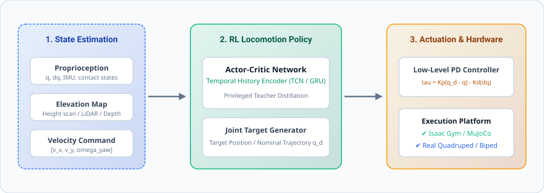

Robust Locomotion Control for Legged Robots in Unstructured Terrains
1 Robotics & AI Lab | 2 Department of Control Science & Engineering
Sim2Real Legged Locomotion Demonstration
Blind & visual-aided locomotion on rocky terrains, slope climbing (up to 35°), and continuous external impulse disturbance recovery.
Tip: Replace this container with <video> or YouTube / Bilibili iframeFigure 1: Quadruped robot traversing diverse challenging terrain profiles without prior mapping.
Zero-Shot Sim2Real
Massive parallel reinforcement learning in Isaac Gym with asymmetric actor-critic domain randomization.
Impulse Recovery
Dynamic footfall adjustment and body posture adaptation under sudden lateral impacts of up to 150 N.
Low-Latency Execution
50 Hz high-level policy inference combined with 500 Hz low-level joint torque PD impedance control.
Abstract
Autonomous locomotion of legged robots across unmapped, complex geometries presents a significant challenge due to severe contact discontinuities, sensor noise, and modeling inaccuracies. In this work, we propose an end-to-end framework combining model predictive guidance with deep reinforcement learning. By leveraging privileged environmental observations during simulation training and distilling them into a temporal student policy operating solely on onboard proprioceptive sensors, our system enables agile, robust, and energy-efficient locomotion. Experimental evaluations across diverse real-world obstacles demonstrate that our controller achieves exceptional stability, high obstacle traversal rates, and smooth sim-to-real transfer.
System Architecture & Pipeline
The complete pipeline consists of state estimation, an actor-critic deep neural policy network, and a low-level joint PD torque actuator loop:

Mathematical Formulation
The policy optimization optimizes the expected discounted reward over trajectory rollouts $\tau$:
Where $r_{\text{track}}$ denotes linear and angular velocity tracking reward, $\lambda_e$ penalizes actuator power consumption, and $\lambda_s$ enforces joint acceleration smoothness.
Experimental Benchmark
Quantitative comparison against baseline controllers across challenging simulated and real-world conditions:
| Method | Max Slope | Push Resistance | Traversal Rate | Cost of Transport (CoT) |
|---|---|---|---|---|
| Standard MPC | 18° | 60 N | 71.5% | 1.42 |
| Vanilla RL (PPO) | 24° | 95 N | 82.3% | 1.18 |
| Ours (Proposed) | 35° | 150 N | 96.8% | 0.87 |
Citation
@article{sjd2026leggedcontrol,
title = {Robust Locomotion Control for Legged Robots in Unstructured Terrains},
author = {SJD and Collaborators},
journal = {arXiv preprint arXiv:2609.XXXXX},
year = {2026},
url = {https://github.com/RegulusSJD/legged-robot-control}
}